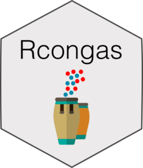

Rcongas 
This is the (R)CONGAS+ R package, an interface to run the probabilistic methods implemented in the Python CONGAS+ package using Pyro. These methods implement several statistical models to genotype Copy Number Alterations from single-cell RNA and ATAC sequencing, integrating at the same time bulk DNA sequencing.
This package implements S3 objects to preprocess and visualize input single-cell data, create and visualize model fits. The current package is an extension of the original, single-molecule version; it retains the same name to avoid confusion.
Citation


If you use Rcongas, please cite these two papers:
A Bayesian method to cluster single-cell RNA sequencing data using copy number alterations. Salvatore Milite, Riccardo Bergamin, Lucrezia Patruno, Nicola Calonaci, Giulio Caravagna. Bioinformatics 2022.
A Bayesian method to infer copy number clones from single-cell RNA and ATAC sequencing. Lucrezia Patruno, Salvatore Milite, Riccardo Bergamin Nicola Calonaci, Alberto D’Onofrio, Fabio Anselmi, Marco Antoniotti, Alex Graudenzi, Giulio Caravagna. PLOScompbio, 2023
Installation
You can install the released version of Rcongas from GitHub with:
# install.packages("devtools")
devtools::install_github("caravagnalab/Rcongas")